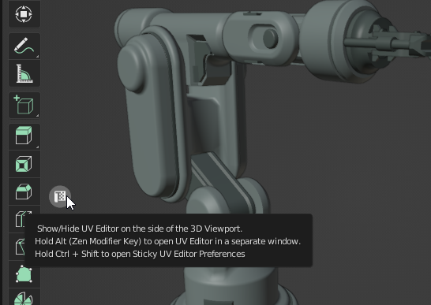

Sticky UV Editor
Sticky UV Editor this is a system that allows opening UV Editor on the left or the right from the active 3D Viewport or as a separate window. These actions can be done by shortcuts or using a widget in the 3D Viewport.


The side opening UV Editor depends on the on-screen position of the widget.
Sticky UV Editor Properties
The properties of the Sticky UV Editor are placed in the addon preferences.

General
- UV Editor Side - The side where the UV Editor will be shown.
- Show Operate Button - The visibility of the on-screen widget. Next on the checkbox is the field for the position of the widget.
- Remember UV Editor Settings - Every time UV Editor is opened, all the options activated in the previous session will be remembered and restored to the current session.
Overlay
The Overlay tab is the copy of the Blender’s UV Editor Overlay popup. Once usage of the Remember UV Editor Settings is not needed, all the settings from the Overlay tab will be used for every creation of the UV Editor until the user changes the options manually.
View
The View tab has the same purposes as the Overlay tab. Except of controls. It tune the state of the panels in the UV Editor.
About
The original idea and the development of the Sticky UV Editor belong to Oleg Stepanov (DotBow). So, here is the link to the page with an original addon.